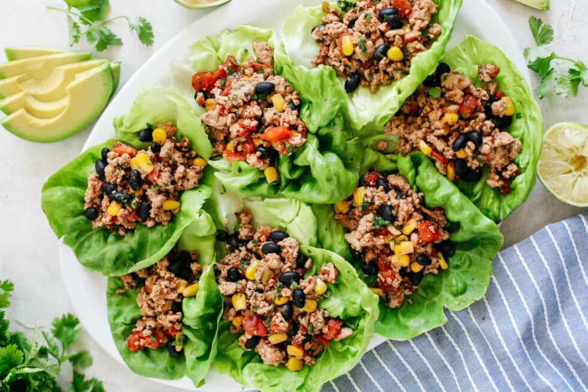

Receta Nro 4 :
Tacos de lechuga con pavo y guacamole
Ingredientes:
500 g de carne de pavo molida
1 lechuga romana (para usar las hojas como "tortillas")
1 aguacate
1 tomate
½ cebolla
1 diente de ajo
Jugo de 1 limon
Sal, pimienta, comino y chile en polvo al gusto
Instrucciones:
En una sarten, cocina el pavo molido con un poco de aceite de oliva. Anade sal, pimienta, comino y chile en polvo. Cocina hasta que este dorado y bien cocido.
Para el guacamole, machaca el aguacate en un tazon, anade el tomate y la cebolla picados finamente, el ajo triturado y el jugo de limon. Sazona con sal y pimienta.
Lava las hojas de lechuga y utilizalas como base para los tacos.
Coloca una porcion de pavo molido en cada hoja de lechuga y anade una cucharada de guacamole encima.
